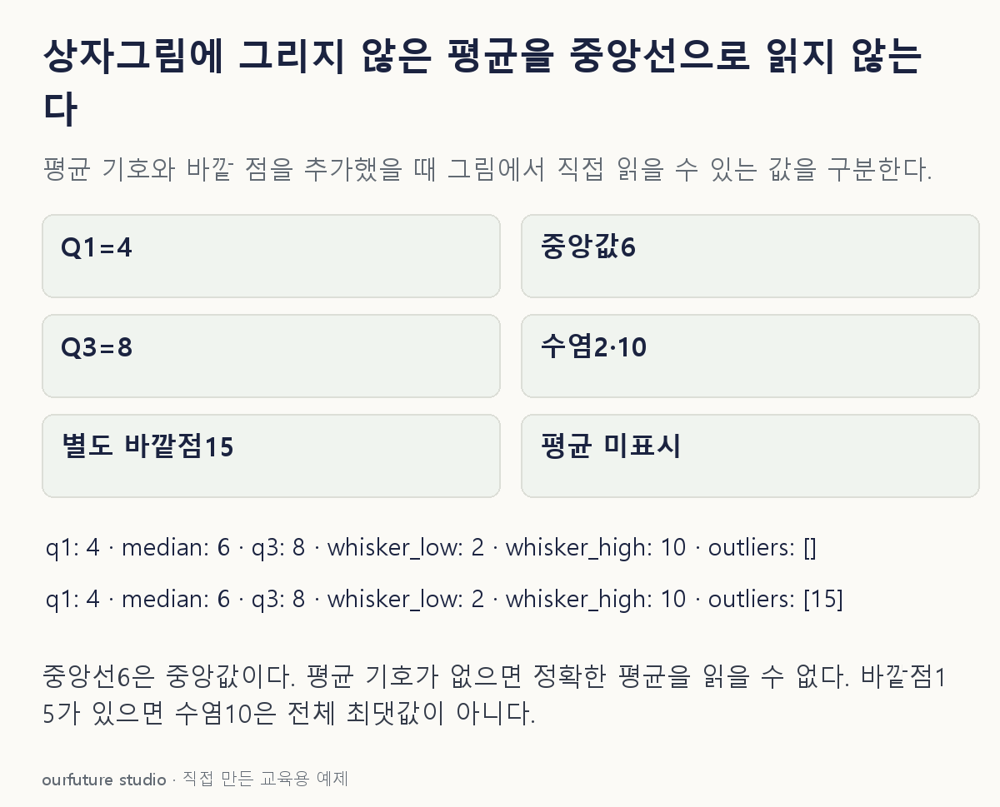

조건을 바꾸며 확인하기
전체 자료가 없는 요약 도식이다. 평균7은 가상으로 추가한 표시이며 다섯 요약값에서 계산한 결과가 아니다.
기본 예제와 비교하기
아래 그림과 표는 글의 기본 조건입니다. 입력을 바꾼 결과는 계산 칸에서 확인하세요.

같은 문제를 직접 골라 보기
상자그림에 아래 수염2·Q1=4·중앙값6·Q3=8·위 수염10만 표시하고 평균 기호는 없다.
조건을 더 바꾸면?
위 수염 10보다 큰 바깥 점 15가 하나 추가로 표시됐다. 10을 자료 전체의 최댓값으로 읽어도 될까?
변형 풀이 확인
안 된다. 적어도 15라는 더 큰 관측이 표시됐다.
이 상황의 수염은 전체 극값이 아니라 정해진 관례에 따른 경계 안의 관측까지 표시한 것으로 읽어야 한다.
중앙선은 중앙값이며 평균은 별도 표시를 확인한다.